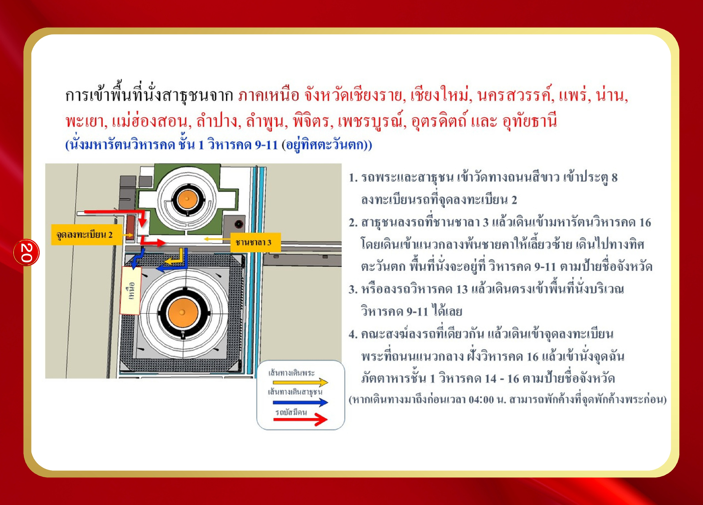

การเข้าพื้นที่นั่งสาธุชน ภาคเหนือ (กลุ่มที่ 1)
หน้า 20
จังหวัด: เชียงราย, เชียงใหม่, นครสวรรค์, แพร่, น่าน, พะเยา, แม่ฮ่องสอน, ลำปาง, ลำพูน, พิจิตร, เพชรบูรณ์, อุตรดิตถ์, อุทัยธานี
นั่งที่: มหารัตนวิหารคด ชั้น 1 วิหารคด 9-11 (อยู่ทิศตะวันตก)
ขั้นตอน:
- รถพระและสาธุชน เข้าวัดทางถนนสีขาว เข้าประตู 8 ทำการลงทะเบียนที่จุดลงทะเบียน 2
- สาธุชนลงรถที่ชานชาลา 3 แล้วเดินเข้ามหารัตนวิหารคด 16 โดยเดินเข้าแนวกลาง พ้นชายคาให้เลี้ยวซ้าย เดินไปทางทิศตะวันตก พื้นที่นั่งจะอยู่ที่วิหารคด 9-11 ตามป้ายชื่อจังหวัด
- หรือลงรถวิหารคด 13 แล้วเดินตรงเข้าพื้นที่นั่งบริเวณวิหารคด 9-11 ได้เลย
- คณะสงฆ์ลงรถที่เดียวกัน แล้วเดินเข้าจุดลงทะเบียนพระที่ถนนแนวกลาง ฝั่งวิหารคด 16 แล้วเข้านั่งจุดฉันภัตตาหารชั้น 1 วิหารคด 14-16 ตามป้ายชื่อจังหวัด
(หากเดินทางมาถึงก่อนเวลา 04:00 น. สามารถพักค้างที่จุดพักค้างพระก่อน)
